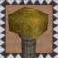
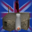
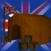
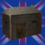
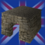
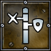

British Techtree of Glest - Version 0.8.2 beta (Zetapack)
Choose faction: British | Egypt | Elves | Greece | Indian | Magic | Medieval | Norsemen | Persian | Romans | Tech
Techtree Diagrams: Buildings | Buildings Units | All
Overview for Faction: British
Combat Units
| Name | Total Cost | Hit Points | Rege- nerate | Armor Strength | Armor Type | Sight Range | Move Speed | Air / Ground | Attack Strength Land | Attack Strength Air | Attack Range |
|---|---|---|---|---|---|---|---|---|---|---|---|
| Air Box | 6000 | - | 3 | Stone | 16 | -- | Ground | -- | 200 +- 50 | 15 | |
| Balloon | 1600 | 4 | 20 | Organic | 15 | 300 | Air | 280 +- 80 | 280 +- 80 | 8 | |
| | 2700 | 5 | 45 | Leather | 15 | 110 | Ground | 500 +- 100 | 445 +- 20 | 10 | |
| | 2200 | 3 | 5 | Metal | 12 | 100 | Ground | 300 +- 120 | -- | 12 | |
| Captain | 1200 | 3 | 30 | Leather | 13 | 260 | Ground | 300 +- 60 | 300 +- 60 | 7 | |
| Cavalry | 1200 | 3 | 4 | Leather | 12 | 480 | Ground | 230 +- 30 | 120 +- 60 | 10 | |
| Grenadier | 750 | 1 | 5 | Leather | 12 | 220 | Ground | 400 +- 150 | -- | 8 | |
| Infantryman | 700 | 1 | 10 | Leather | 15 | 200 | Ground | 110 +- 35 | 110 +- 35 | 10 | |
| Lookout Tower | 7000 | - | 20 | Wood | 16 | -- | Ground | 120 +- 50 | 120 +- 50 | 12 | |
| Mortar | 1050 | 100 | 10 | Metal | 16 | -- | Ground | 250 +- 125 | -- | 7 | |
| | 500 | 1 | - | Leather | 9 | 150 | Ground | 150 +- 100 | 150 +- 100 | 6 | |
| Puckle Gun | 2500 | 3 | 6 | Wood | 10 | 170 | Ground | 160 +- 100 | -- | 9 | |
| Rabid Sheep | 700 | 1 | - | Organic | 12 | 240 | Ground | 24 +- 8 | -- | 1 | |
| Saberman | 850 | 1 | - | Leather | 12 | 250 | Ground | 110 +- 40 | -- | 1 |
Worker Units
| Name | Total Cost | Hit Points | Rege- nerate | Armor Strength | Armor Type | Sight Range | Move Speed | Air / Ground |
|---|---|---|---|---|---|---|---|---|
| Colonist | 600 | 1 | - | Leather | 9 | 210 | Ground | |
| Livestock | 0 | - | - | Organic | - | -- | Air | |
| | 500 | 1 | - | Leather | 9 | 150 | Ground |
Buildings
| Name | Total Cost | Hit Points | Rege- nerate | Armor Strength | Armor Type | Sight Range | Storage |
|---|---|---|---|---|---|---|---|
| Air Box | 6000 | - | 3 | Stone | 16 | ||
| Artillery Foundry | 6000 | - | - | Stone | 6 | ||
| Balloon Base | 6000 | - | - | Wood | 5 | ||
| Camp | 6000 | - | - | Wood | 12 | ||
| Farm House | 3000 | - | - | Wood | 5 | ||
| Fort | 10000 | - | - | Wood | 15 | ||
| Lookout Tower | 7000 | - | 20 | Wood | 16 | ||
| Powder House | 6000 | - | - | Stone | 12 |
Upgrades
| Name | Cost | Increases | Affects | Enables to build |
|---|---|---|---|---|
| | Sight: +1, Attack Strength: +45, Move: +40 | Cannon, Captain, Cavalry, Infantryman, Puckle Gun | Lookout Tower, Enables command 'Produce Nurse' for: Camp | |
| Heated Air | Balloon | |||
| Imperialism | Armor: +20 | Captain, Cavalry, Infantryman, Saberman, Lookout Tower, Air Box, Mortar, Puckle Gun | Air Box, Grenadier, Mortar, Battering Ram | |
| | Sight: +1, Attack Strength: +45, Attack Range: +1, Armor: +40, Move: +100, Production Speed: +80 | Nurse | ||
| Puckle | Puckle Gun | |||
| Stables | Cavalry, Captain | |||
| Training Field | Production Speed: +150 | Camp |
Unit Details for Faction British
| Air Box | |
 | |
| Type: | Building |
| Creation: | Built by Nurse |
| Total Cost: | |
| Production Time: | 150 |
| Maximum Hitpoints: | 6000 |
| Regeneration of Hitpoints: | - |
| Armor-Strength: | 3 |
| Armor-Type: | Stone |
| Sight-Range: | 16 |
| Needed to build 'Air Box': | Imperialism |
| Movement Type: | Ground Unit |
| Attack Command: Attack On |
Target: Only air units Strength: 200+-50 Range: 15 Splash-Radius: 3 Splash also damages own units! Type: Energy Attack Speed: 80 Start Time: 0.3 |
| Upgrades Available: | Imperialism (Armor: +20) |
| Artillery Foundry | |
 | |
| Type: | Building |
| Creation: | Built by Colonist |
| Total Cost: | |
| Storage: | |
| Production Time: | 100 |
| Maximum Hitpoints: | 6000 |
| Regeneration of Hitpoints: | - |
| Armor-Strength: | - |
| Armor-Type: | Stone |
| Sight-Range: | 6 |
| 'Artillery Foundry' is able to Produce: | Captain Cannon Grenadier |
| 'Artillery Foundry' is able to Upgrade: | Puckle |
| 'Artillery Foundry' is a Requirement for: | Balloon Balloon Base Wagon Worker Puckle Gun |
| Needed to build 'Artillery Foundry': | Fort Powder House |
| Balloon | |
 | |
| Type: | Combat Unit |
| Creation: | Produced by Balloon Base |
| Total Cost: | |
| Production Time: | 150 |
| Maximum Hitpoints: | 1600 |
| Regeneration of Hitpoints: | 4 |
| Armor-Strength: | 20 |
| Armor-Type: | Organic |
| Sight-Range: | 15 |
| Needed to build 'Balloon': | Artillery Foundry Heated Air |
| Movement Type: | Air Unit |
| Move Command: Move | Speed: 300 |
| Attack Command: Molotov |
Target: Ground and air units Strength: 280+-80 Range: 8 Splash-Radius: 1 Splash also damages own units! Type: Energy Attack Speed: 40 Start Time: 0.3 This Attack Skill is used on "Hold Position" |
| Level(s): |
Royal at 10 kills Hitpoints: 1600 -> 2400 Armor Strength: 20 -> 30 Sight: 15 -> 18 |
| Balloon Base | |
 | |
| Type: | Building |
| Creation: | Built by Colonist |
| Total Cost: | |
| Production Time: | 50 |
| Maximum Hitpoints: | 6000 |
| Regeneration of Hitpoints: | - |
| Armor-Strength: | - |
| Armor-Type: | Wood |
| Sight-Range: | 5 |
| 'Balloon Base' is able to Produce: | Balloon |
| 'Balloon Base' is able to Upgrade: | Heated Air |
| Needed to build 'Balloon Base': | Fort Artillery Foundry |
 | Battering Ram |
 | |
| Type: | Combat Unit |
| Creation: | Morphing from Nurse |
| Total Cost: | (Cost for Battering Ram with 20 % discount = + cost for Nurse = |
| Production Time: | 120 |
| Maximum Hitpoints: | 2700 |
| Regeneration of Hitpoints: | 5 |
| Armor-Strength: | 45 |
| Armor-Type: | Leather |
| Sight-Range: | 15 |
| Needed to build 'Battering Ram': | Imperialism |
| Movement Type: | Ground Unit |
| Move Command: Move | Speed: 110 |
| Attack Command: Attack Land |
Target: Only ground units Strength: 500+-100 Range: 2 Splash-Radius: 1 Splash also damages own units! Type: Beat Attack Speed: 150 Start Time: 0.5 This Attack Skill is used on "Hold Position" |
| Attack Command: Attack Air |
Target: Only air units Strength: 445+-20 Range: 10 Type: Piercing Attack Speed: 150 Start Time: 0.25 |
| Level(s): |
Elite at 8 kills Hitpoints: 2700 -> 4050 Armor Strength: 45 -> 67 Sight: 15 -> 18 |
| Camp | |
 | |
| Type: | Building |
| Creation: | Built by Colonist |
| Total Cost: | |
| Storage: | |
| Production Time: | 95 |
| Maximum Hitpoints: | 6000 |
| Regeneration of Hitpoints: | - |
| Armor-Strength: | - |
| Armor-Type: | Wood |
| Sight-Range: | 12 |
| 'Camp' is able to Produce: | Infantryman Saberman Cavalry Nurse |
| 'Camp' is able to Upgrade: | Training Field |
| 'Camp' is a Requirement for: | Mortar Cannon |
| Needed to build 'Camp': | Fort |
| Upgrades Available: | Training Field (Production Speed: +150) |
 | Cannon |
 | |
| Type: | Combat Unit |
| Creation: | Produced by Artillery Foundry |
| Total Cost: | |
| Production Time: | 100 |
| Maximum Hitpoints: | 2200 |
| Regeneration of Hitpoints: | 3 |
| Armor-Strength: | 5 |
| Armor-Type: | Metal |
| Sight-Range: | 12 |
| Needed to build 'Cannon': | Camp Powder House |
| Movement Type: | Ground Unit |
| Move Command: Move | Speed: 100 |
| Attack Command: Led Ball |
Target: Only ground units Strength: 300+-120 Range: 12 Splash-Radius: 1 Splash also damages own units! Type: Impact Attack Speed: 20 Start Time: 0.08 This Attack Skill is used on "Hold Position" |
| Upgrades Available: | Gun Powder (Sight: +1,
Attack Strength: +45,
Move: +40) |
| Captain | |
 | |
| Type: | Combat Unit |
| Creation: | Produced by Artillery Foundry |
| Total Cost: | |
| Production Time: | 120 |
| Maximum Hitpoints: | 1200 |
| Regeneration of Hitpoints: | 3 |
| Armor-Strength: | 30 |
| Armor-Type: | Leather |
| Sight-Range: | 13 |
| Needed to build 'Captain': | Stables Powder House |
| Movement Type: | Ground Unit |
| Move Command: Move | Speed: 260 |
| Attack Command: Attack |
Target: Ground and air units Strength: 300+-60 Range: 7 Type: Piercing Attack Speed: 50 Start Time: 0.05 This Attack Skill is used on "Hold Position" |
| Level(s): |
Loyal at 6 kills Hitpoints: 1200 -> 1800 Armor Strength: 30 -> 45 Sight: 13 -> 15 |
| Upgrades Available: | Imperialism (Armor: +20) Gun Powder (Sight: +1, Attack Strength: +45, Move: +40) |
| Cavalry | |
 | |
| Type: | Combat Unit |
| Creation: | Produced by Camp |
| Total Cost: | |
| Production Time: | 120 |
| Maximum Hitpoints: | 1200 |
| Regeneration of Hitpoints: | 3 |
| Armor-Strength: | 4 |
| Armor-Type: | Leather |
| Sight-Range: | 12 |
| Needed to build 'Cavalry': | Stables Powder House |
| Movement Type: | Ground Unit |
| Move Command: Move | Speed: 480 |
| Attack Command: Bayonet Attack |
Target: Only ground units Strength: 230+-30 Range: 1 Type: Piercing Attack Speed: 100 Start Time: 0.8 |
| Attack Command: Shoot Rifle |
Target: Ground and air units Strength: 120+-60 Range: 10 Type: Piercing Attack Speed: 30 Start Time: 0.05 This Attack Skill is used on "Hold Position" |
| Level(s): |
Loyalest at 6 kills Hitpoints: 1200 -> 1800 Armor Strength: 4 -> 6 Sight: 12 -> 14 |
| Upgrades Available: | Imperialism (Armor: +20) Gun Powder (Sight: +1, Attack Strength: +45, Move: +40) |
| Colonist | |
 | |
| Type: | Worker Unit |
| Creation: | Produced by Fort |
| Total Cost: | |
| Production Time: | 40 |
| Maximum Hitpoints: | 600 |
| Regeneration of Hitpoints: | 1 |
| Armor-Strength: | - |
| Armor-Type: | Leather |
| Sight-Range: | 9 |
| 'Colonist' is able to Build: | Farm House Camp Powder House Artillery Foundry Lookout Tower Balloon Base Fort |
| Movement Type: | Ground Unit |
| Move Command: Move | Speed: 210 |
| Morph Skill: Morph | Morphing to: Wagon Worker Refund (Discount): 0 % Morph Speed: 500 |
| Repair/Heal Skill: Repair | Repairing: Powder House, Farm House, Camp, Fort, Lookout Tower, Artillery Foundry, Balloon Base, Puckle Gun, Mortar, Air Box Repair/Heal Speed: 40 |
| Harvest/Mine Skill: Mine | Speed: 225 Max Load: 25 Hits per Unit: 1 |
| Harvest/Mine Skill: Harvest Wood | Speed: 150 Max Load: 20 Hits per Unit: 1 |
| Farm House | |
 | |
| Type: | Building |
| Creation: | Built by Colonist |
| Total Cost: | |
| Storage: | |
| Production Time: | 50 |
| Maximum Hitpoints: | 3000 |
| Regeneration of Hitpoints: | - |
| Armor-Strength: | - |
| Armor-Type: | Wood |
| Sight-Range: | 5 |
| 'Farm House' is able to Produce: | Livestock Rabid Sheep |
| 'Farm House' is able to Upgrade: | Stables |
| 'Farm House' is a Requirement for: | Wagon Worker |
| Needed to build 'Farm House': | Fort |
| Fort | |
 | |
| Type: | Building |
| Creation: | Built by Colonist |
| Total Cost: | |
| Storage: | |
| Production Time: | 300 |
| Maximum Hitpoints: | 10000 |
| Regeneration of Hitpoints: | - |
| Armor-Strength: | - |
| Armor-Type: | Wood |
| Sight-Range: | 15 |
| 'Fort' is able to Produce: | Colonist |
| 'Fort' is a Requirement for: | Powder House Balloon Base Mortar Artillery Foundry Camp Farm House |
| Grenadier | |
 | |
| Type: | Combat Unit |
| Creation: | Produced by Artillery Foundry |
| Total Cost: | |
| Production Time: | 100 |
| Maximum Hitpoints: | 750 |
| Regeneration of Hitpoints: | 1 |
| Armor-Strength: | 5 |
| Armor-Type: | Leather |
| Sight-Range: | 12 |
| Needed to build 'Grenadier': | Imperialism |
| Movement Type: | Ground Unit |
| Move Command: Move | Speed: 220 |
| Move Command: Patrol | Speed: 220 |
| Attack Command: Frag Grenade |
Target: Only ground units Strength: 400+-150 Range: 8 Splash-Radius: 2 Splash also damages own units! Type: Impact Attack Speed: 30 Start Time: 0.1 This Attack Skill is used on "Hold Position" |
| Level(s): |
Brave at 6 kills Hitpoints: 750 -> 1125 Armor Strength: 5 -> 7 Sight: 12 -> 14 Master at 8 kills Hitpoints: 1125 -> 1687 Armor Strength: 7 -> 11 Sight: 14 -> 17 |
 | Gun Powder |
 | |
| Type: | Upgrade |
| Creation: | Upgraded by Powder House |
| Total Cost: | |
| Production Time: | 300 |
| Increase Sight: | +1 |
| Increase Attack Strength: | +45 |
| Increase Move: | +40 |
| Affects Units: | Cannon, Captain, Cavalry, Infantryman, Puckle Gun |
| 'Gun Powder' is a Upgrade-Requirement for: | Lookout Tower |
| 'Gun Powder' enables commands: | Produce Nurse : Camp |
| Needed to build 'Gun Powder': | Powder House |
| Heated Air | |
 | |
| Type: | Upgrade |
| Creation: | Upgraded by Balloon Base |
| Total Cost: | |
| Production Time: | 250 |
| 'Heated Air' is a Upgrade-Requirement for: | Balloon |
| Needed to build 'Heated Air': | Balloon Base |
| Imperialism | |
 | |
| Type: | Upgrade |
| Creation: | Upgraded by Powder House |
| Total Cost: | |
| Production Time: | 300 |
| Increase Armor: | +20 |
| Affects Units: | Captain, Cavalry, Infantryman, Saberman, Lookout Tower, Air Box, Mortar, Puckle Gun |
| 'Imperialism' is a Upgrade-Requirement for: | Air Box Grenadier Mortar Battering Ram |
| Needed to build 'Imperialism': | Powder House |
| Infantryman | |
 | |
| Type: | Combat Unit |
| Creation: | Produced by Camp |
| Total Cost: | |
| Production Time: | 70 |
| Maximum Hitpoints: | 700 |
| Regeneration of Hitpoints: | 1 |
| Armor-Strength: | 10 |
| Armor-Type: | Leather |
| Sight-Range: | 15 |
| Movement Type: | Ground Unit |
| Move Command: Move | Speed: 200 |
| Attack Command: Attack |
Target: Ground and air units Strength: 110+-35 Range: 10 Type: Piercing Attack Speed: 50 Start Time: 0.05 This Attack Skill is used on "Hold Position" |
| Level(s): |
Elite at 7 kills Hitpoints: 700 -> 1050 Armor Strength: 10 -> 15 Sight: 15 -> 18 |
| Upgrades Available: | Imperialism (Armor: +20) Gun Powder (Sight: +1, Attack Strength: +45, Move: +40) |
| Livestock | |
 | |
| Type: | Worker Unit |
| Creation: | Produced by Farm House |
| Total Cost: | |
| Production Time: | 25 |
| Maximum Hitpoints: | 0 |
| Regeneration of Hitpoints: | - |
| Armor-Strength: | - |
| Armor-Type: | Organic |
| Sight-Range: | - |
| Movement Type: | Air Unit |
| Lookout Tower | |
 | |
| Type: | Building |
| Creation: | Built by Colonist |
| Total Cost: | |
| Production Time: | 140 |
| Maximum Hitpoints: | 7000 |
| Regeneration of Hitpoints: | - |
| Armor-Strength: | 20 |
| Armor-Type: | Wood |
| Sight-Range: | 16 |
| Needed to build 'Lookout Tower': | Powder House Gun Powder |
| Movement Type: | Ground Unit |
| Attack Command: Attack On |
Target: Ground and air units Strength: 120+-50 Range: 12 Type: Piercing Attack Speed: 80 Start Time: 0.3 |
| Upgrades Available: | Imperialism (Armor: +20) |
 | Medicine |
 | |
| Type: | Upgrade |
| Creation: | Upgraded by Nurse |
| Total Cost: | |
| Production Time: | 200 |
| Increase Sight: | +1 |
| Increase Attack Strength: | +45 |
| Increase Attack Range: | +1 |
| Increase Armor: | +40 |
| Increase Move: | +100 |
| Increase Production Speed: | +80 |
| Affects Units: | Nurse |
| Needed to build 'Medicine': | Nurse |
| Mortar | |
 | |
| Type: | Combat Unit |
| Creation: | Morphing from Saberman |
| Total Cost: | (Cost for Mortar with 40 % discount = + cost for Saberman = |
| Production Time: | 20 |
| Maximum Hitpoints: | 1050 |
| Regeneration of Hitpoints: | 100 |
| Armor-Strength: | 10 |
| Armor-Type: | Metal |
| Sight-Range: | 16 |
| Needed to build 'Mortar': | Imperialism Fort Camp Powder House |
| Movement Type: | Ground Unit |
| Attack Command: Attack On |
Target: Only ground units Strength: 250+-125 Range: 7 Splash-Radius: 2 Splash also damages own units! Type: Energy Attack Speed: 45 Start Time: 0.3 |
| Upgrades Available: | Imperialism (Armor: +20) |
 | Nurse |
 | |
| Type: | Worker Unit Combat Unit |
| Creation: | Produced by Camp |
| Total Cost: | |
| Production Time: | 60 |
| Maximum Hitpoints: | 500 |
| Regeneration of Hitpoints: | 1 |
| Armor-Strength: | - |
| Armor-Type: | Leather |
| Sight-Range: | 9 |
| 'Nurse' is able to Build: | Air Box |
| 'Nurse' is able to Upgrade: | Medicine |
| Movement Type: | Ground Unit |
| Move Command: Move | Speed: 150 |
| Morph Skill: Build Br | Morphing to: Battering Ram Refund (Discount): 20 % Morph Speed: 450 |
| Attack Command: Use Pepper Spray |
Target: Ground and air units Strength: 150+-100 Range: 6 Type: Energy Attack Speed: 60 Start Time: 0.05 This Attack Skill is used on "Hold Position" |
| Upgrades Available: | Medicine (Sight: +1,
Attack Strength: +45,
Attack Range: +1,
Armor: +40,
Move: +100,
Production Speed: +80) |
| Repair/Heal Skill: Heal | Healing: Cannon, Captain, Cavalry, Colonist, Grenadier, Infantryman, Mortar, Puckle Gun, Saberman, Wagon Worker, Nurse, Air Box, Rabid Sheep Repair/Heal Speed: 50 |
| Powder House | |
 | |
| Type: | Building |
| Creation: | Built by Colonist |
| Total Cost: | |
| Storage: | |
| Production Time: | 120 |
| Maximum Hitpoints: | 6000 |
| Regeneration of Hitpoints: | - |
| Armor-Strength: | - |
| Armor-Type: | Stone |
| Sight-Range: | 12 |
| 'Powder House' is able to Upgrade: | Gun Powder Imperialism |
| 'Powder House' is a Requirement for: | Cavalry Mortar Artillery Foundry Lookout Tower Cannon Puckle Gun Captain |
| Needed to build 'Powder House': | Fort |
| Puckle | |
 | |
| Type: | Upgrade |
| Creation: | Upgraded by Artillery Foundry |
| Total Cost: | |
| Production Time: | 200 |
| 'Puckle' is a Upgrade-Requirement for: | Puckle Gun |
| Needed to build 'Puckle': | Artillery Foundry |
| Puckle Gun | |
 | |
| Type: | Combat Unit |
| Creation: | Morphing from Saberman |
| Total Cost: | (Cost for Puckle Gun with 40 % discount = + cost for Saberman = |
| Production Time: | 140 |
| Maximum Hitpoints: | 2500 |
| Regeneration of Hitpoints: | 3 |
| Armor-Strength: | 6 |
| Armor-Type: | Wood |
| Sight-Range: | 10 |
| Needed to build 'Puckle Gun': | Puckle Artillery Foundry Powder House |
| Movement Type: | Ground Unit |
| Move Command: Move | Speed: 70 |
| Attack Command: Attack |
Target: Only ground units Strength: 160+-100 Range: 9 Splash-Radius: 1 Splash also damages own units! Type: Piercing Attack Speed: 90 Start Time: 0.5 This Attack Skill is used on "Hold Position" Special Move Speed: 170 (Charge Skill) |
| Level(s): |
Elite at 10 kills Hitpoints: 2500 -> 3750 Armor Strength: 6 -> 9 Sight: 10 -> 12 |
| Upgrades Available: | Imperialism (Armor: +20) Gun Powder (Sight: +1, Attack Strength: +45, Move: +40) |
| Rabid Sheep | |
 | |
| Type: | Combat Unit |
| Creation: | Produced by Farm House |
| Total Cost: | |
| Production Time: | 30 |
| Maximum Hitpoints: | 700 |
| Regeneration of Hitpoints: | 1 |
| Armor-Strength: | - |
| Armor-Type: | Organic |
| Sight-Range: | 12 |
| Movement Type: | Ground Unit |
| Move Command: Move | Speed: 240 |
| Attack Command: Attack |
Target: Only ground units Strength: 24+-8 Range: 1 Splash-Radius: 0 Splash also damages own units! Type: Magic Attack Speed: 450 Start Time: 0.3 |
| Level(s): |
Elite at 3 kills Hitpoints: 700 -> 1050 Armor Strength: 0 -> 0 Sight: 12 -> 14 |
| Saberman | |
 | |
| Type: | Combat Unit |
| Creation: | Produced by Camp |
| Total Cost: | |
| Production Time: | 60 |
| Maximum Hitpoints: | 850 |
| Regeneration of Hitpoints: | 1 |
| Armor-Strength: | - |
| Armor-Type: | Leather |
| Sight-Range: | 12 |
| Movement Type: | Ground Unit |
| Move Command: Move | Speed: 220 |
| Morph Skill: Morph Puckle | Morphing to: Puckle Gun Refund (Discount): 40 % Morph Speed: 500 |
| Morph Skill: Morph Mortar | Morphing to: Mortar Refund (Discount): 40 % Morph Speed: 500 |
| Attack Command: Attack |
Target: Only ground units Strength: 110+-40 Range: 1 Type: Slashing Attack Speed: 100 Start Time: 0 This Attack Skill is used on "Hold Position" Special Move Speed: 250 (Charge Skill) |
| Level(s): |
Elite at 5 kills Hitpoints: 850 -> 1275 Armor Strength: 0 -> 0 Sight: 12 -> 14 |
| Upgrades Available: | Imperialism (Armor: +20) |
| Stables | |
 | |
| Type: | Upgrade |
| Creation: | Upgraded by Farm House |
| Total Cost: | |
| Production Time: | 200 |
| 'Stables' is a Upgrade-Requirement for: | Cavalry Captain |
| Needed to build 'Stables': | Farm House |
| Training Field | |
 | |
| Type: | Upgrade |
| Creation: | Upgraded by Camp |
| Total Cost: | |
| Production Time: | 100 |
| Increase Production Speed: | +150 |
| Affects Units: | Camp |
| Needed to build 'Training Field': | Camp |
| Wagon Worker | |
 | |
| Type: | |
| Creation: | Morphing from Colonist |
| Total Cost: | (Cost for Wagon Worker = + cost for Colonist = |
| Production Time: | 40 |
| Maximum Hitpoints: | 600 |
| Regeneration of Hitpoints: | 1 |
| Armor-Strength: | - |
| Armor-Type: | Leather |
| Sight-Range: | 9 |
| Needed to build 'Wagon Worker': | Artillery Foundry Farm House |
| Move Command: Move | Speed: 160 |
| Harvest/Mine Skill: Mine | Speed: 650 Max Load: 150 Hits per Unit: 1 |
| Harvest/Mine Skill: Harvest Wood | Speed: 500 Max Load: 130 Hits per Unit: 1 |
This page was generated by: convert_faction_xml2html.pl, version: 0.8.2 beta, using config-file: zetapack.ini
ZetaGlest is a fork of MegaGlest
Information and graphics on this site are licensed under a CC-BY-SA license. Some content is derived from the MegaGlest project and Wildfire Games